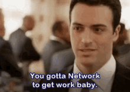
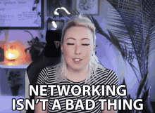
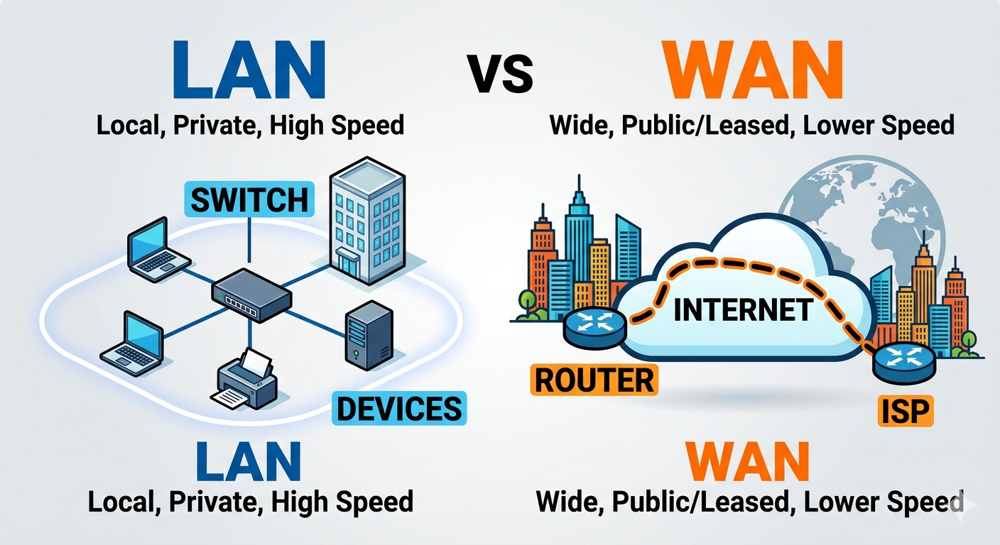
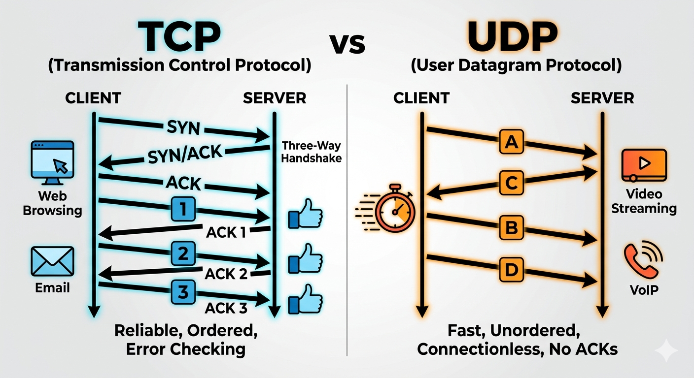

A network is a group of computers and devices connected together to share data and resources.
An IP Address is a unique identifier for a device on a network — like a home address, but for computers.
192.168.1.1

A LAN is a network that connects devices in a small area.
A WAN connects networks over a large geographic area.

HTTP is a protocol used to transfer data between a web browser and a server.
Port 80 became the standard default port for HTTP so computers know where normal web traffic should go.
http://example.comHTTPS is the secure version of HTTP.
Port 443 is used for HTTPS because it is the default port for secure web traffic.
https://example.comTCP ensures reliable data delivery.
UDP sends data faster but without guarantees.
| Feature | TCP | UDP |
|---|---|---|
| Speed | Slower | Faster |
| Reliability | High | Low |
| Error Checking | Yes | No |
| Use Cases | Websites, APIs | Streaming, gaming |

👉 Networking is the foundation of DevOps, because all systems, services, and tools communicate over networks